MICRO(マイクロ)
糸ドライブなどマニアックなアナログディスクプレーヤー等で知られた、オーディオメーカー。かつてＣＤプレイヤーやプリアンプ等も出したこともあるが、アナログプレーヤーに変わる主要商品を生み出せず、現在では少なくともオーディオのジャンルからは完全に消えている。
アナログ関連製品に関しては、凝ったフルオプション式のベルト・糸ドライブプレーヤに特化したのは1970年代末以降であり、1970年頃はカートリッジやアームも盛んな総合的なアナログディスク関連ブランドだった。
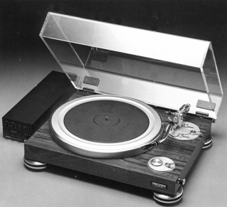
（1977年の最高級プレイヤーDD100。ダイレクト・ドライブである。マイクロがベルトドライブに復帰したのは1978年からである。）
�T.カートリッジ
カートリッジについては、早くから多彩な陣容を持っていた。1970年頃で、MC型、MM型、さらにマイクロがVF（バリアブルフラックス）型と呼ぶMI型の一種が存在した。他にないユニークな点はカートリッジ本体のコイルから直接同軸のリード線を引き出した機種が存在すること。MC型のSLC-80WXとMM型のSLM-10Xが該当する。なおシェルについてもアーム側のコネクターにケーブルを直結したタイプがある。1985年頃撤退。
�@VF型
MI型の一種。アメリカでもパテントを取得していたようだ（US
PAT.NO.3538266)。なお当サイトには掲載しないが、この系統にVF-3500というがあるようだ。
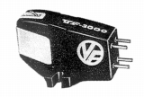
(VF-3000E)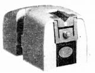
(VF-3100/e-�U）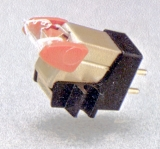
(VF-3200/e）�AMC型
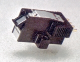
(MC-4100/e)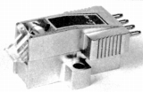
(LC-40)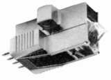
(LC-80W)�BMM型
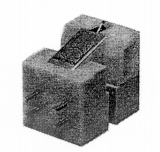
(M-2000/5)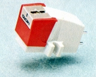
(M-2100/e)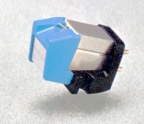
(M-7000/e)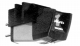
(PLUS-1)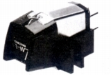
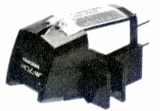
(左 LM-8 右 LM-70W)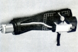
(SLM-10X)*1974年交換針リスト 1976年交換針リスト 1977年交換針リスト 1970年代末交換針リスト
�U.昇圧トランス・ヘッドアンプ・フォノイコライザー
初期には乾電池式のヘッドアンプMTA-41があったが、その後はしばらくMCカートリッジの昇圧手段が無い状態が続いた。1984年に自社のMC型が無い状態で、トランスに進出した。またＣＤの時代になりアナログディスク再生が趣味の領域に移った時代になるとフォノイコライザーにも進出した。
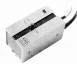
(MTA-41)（ヘッドアンプ） MTA-41
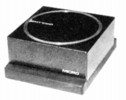
(MT-1000H)（トランス） MT-500 MT-1000H(L)
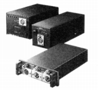
（イコライザーアンプ） M-1
�V.アーム
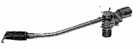
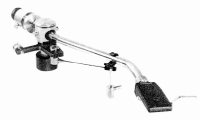
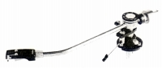
(左 MA-77mk-�U 右 MA-101)MA-77SR MA-77mk-�U MA-100 MA-101
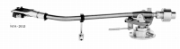
(MA-202)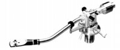
(MA-505)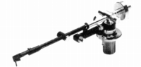
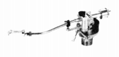
(左 MA-707X 右 MA-808X)MA-707X MA-505X(505S) MA-505LX(505LS) MA-808X
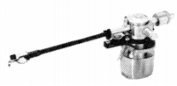
(MAX-282)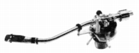
(MA-505LX�U)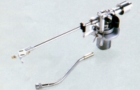
(MA-505MK�V）
�W.その他
�@ヘッドシェル
�Aシェルリード